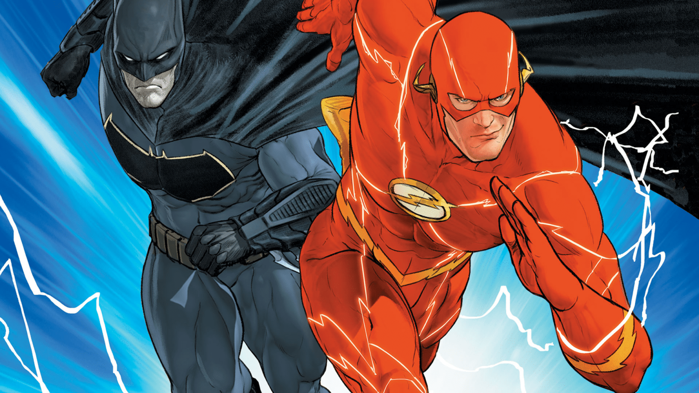

HQ's do Flash
Criado em 1940 por Gardner Fox e Harry Lampert, o Flash é um dos personagens mais importantes da DC Comics – e um dos que mais mudou! Nossa lista de Melhores HQs do Flash visa elencar as histórias que mais representam o personagem e sua relação única com a força de aceleração. Não importa quem está debaixo do manto – Jay Garrick, Wally West, Barry Allen, Bart Allen ou outro – o importante é manter o espírito do maior velocista da Editora das Lendas vivo! Elencamos histórias de todas as fases da vida do personagem – desde histórias clássicas e muito conhecidas até as menos badaladas – o importante é passar a mensagem! Vale relembrar que a ordem é meramente ilustrativa, todas as tramas escolhidas são muito interessantes para a nossa equipe.
